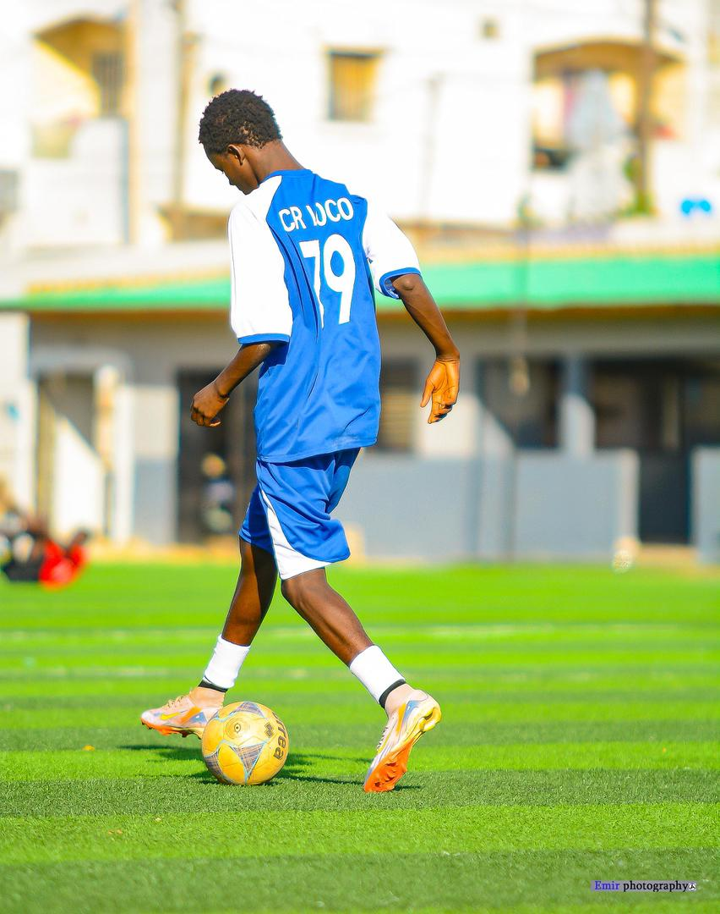
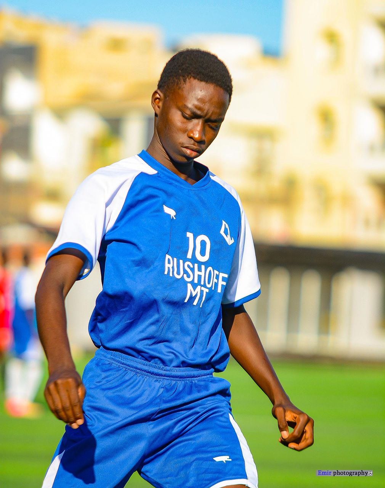

01
Discipline
Respect des horaires, des consignes, des coequipiers et de l'environnement de travail.
L'excellence au service du football senegalais, de la detection des jeunes talents a la preparation au haut niveau.
Centre Loco est une academie de football basee a Dakar. Notre mission est d'encadrer les jeunes joueurs avec discipline, suivi educatif et exigences techniques modernes.
Le centre accompagne chaque joueur dans sa progression sportive et humaine : entrainement, analyse, mental, nutrition et preparation aux competitions locales.
Notre philosophie
Decouvrez les resultats, portraits et temps forts rythment la progression de nos differents categories : U13, U15, U16 et U17.
Explorer les actualites
Joueur du mois U17
Trois bases pour transformer un potentiel en progression durable.
Respect des horaires, des consignes, des coequipiers et de l'environnement de travail.
Chaque seance vise un objectif precis : technique, tactique, physique ou mental.
Les joueurs apprennent les habitudes attendues dans un environnement de haut niveau.